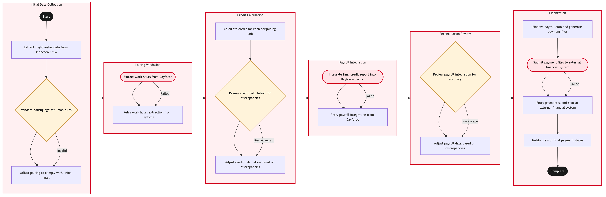

Updated 2026-08-21
Crew Pay Calculation and Credit Reconciliation
Process flow
Click to zoom

Process steps
▼
Phase 1 — Initial Data Collection
3 steps
| Step | Activity | Role | System | Input | Output | KPI | Dec | Exc | Pain point |
|---|---|---|---|---|---|---|---|---|---|
| 1.1 | Extract flight roster data from Jeppesen Crew | YYZ Operations Control Duty Manager | Jeppesen CrewB | Flight roster | Roster data | Data extraction time < 2 hours | N | N | Delayed flight roster updates can cause missed deadlines. |
| 1.2 | Validate pairing against union rules | Aeroplan Member Services Agent | Jeppesen CrewB | Roster data, union agreement rules | Validated pairing list | Pairing validation accuracy > 95% | Y | N | Manual intervention required for complex pairings. |
| 1.3 | Adjust pairing to comply with union rules | Aeroplan Member Services Agent | Jeppesen CrewB | Roster data, union agreement rules | Compliant pairing list | Pairing adjustment time < 4 hours | N | N | Manual adjustments can introduce errors. |
▼
Phase 2 — Pairing Validation
2 steps
| Step | Activity | Role | System | Input | Output | KPI | Dec | Exc | Pain point |
|---|---|---|---|---|---|---|---|---|---|
| 2.1 | Extract work hours from Dayforce | Dayforce Administrator | DayforceB | Roster data | Work hours data | Work hours extraction time < 3 hours | N | Y | Dayforce system downtime can cause delays. |
| 2.2 | Retry work hours extraction from Dayforce | Dayforce Administrator | DayforceB | Roster data | Work hours data | Retry success rate > 80% | N | N | Continuous system issues can lead to prolonged delays. |
▼
Phase 3 — Credit Calculation
3 steps
| Step | Activity | Role | System | Input | Output | KPI | Dec | Exc | Pain point |
|---|---|---|---|---|---|---|---|---|---|
| 3.1 | Calculate credit for each bargaining unit | Cargo Compliance Agent | DayforceB | Work hours data, union agreement rules | Credit calculation report | Credit calculation accuracy > 98% | N | N | Complex credit calculations can introduce errors. |
| 3.2 | Review credit calculation for discrepancies | YYZ Operations Control Duty Manager | DayforceB | Credit calculation report | Adjusted credit report | Discrepancy review time < 5 hours | Y | N | Manual review can miss subtle errors. |
| 3.3 | Adjust credit calculation based on discrepancies | Cargo Compliance Agent | DayforceB | Credit calculation report, discrepancy details | Final credit report | Adjustment time < 2 hours | N | N | Manual adjustments can introduce further errors. |
▼
Phase 4 — Payroll Integration
2 steps
| Step | Activity | Role | System | Input | Output | KPI | Dec | Exc | Pain point |
|---|---|---|---|---|---|---|---|---|---|
| 4.1 | Integrate final credit report into Dayforce payroll | Dayforce Administrator | DayforceB | Final credit report | Payroll data update | Integration time < 2 hours | N | Y | Payroll system downtime can cause delays. |
| 4.2 | Retry payroll integration from Dayforce | Dayforce Administrator | DayforceB | Final credit report | Payroll data update | Retry success rate > 80% | N | N | Continuous system issues can lead to prolonged delays. |
▼
Phase 5 — Reconciliation Review
2 steps
| Step | Activity | Role | System | Input | Output | KPI | Dec | Exc | Pain point |
|---|---|---|---|---|---|---|---|---|---|
| 5.1 | Review payroll integration for accuracy | YYZ Operations Control Duty Manager | DayforceB | Payroll data update | Integration review report | Review time < 3 hours | Y | N | Manual review can miss subtle errors. |
| 5.2 | Adjust payroll data based on discrepancies | Dayforce Administrator | DayforceB | Payroll data update, discrepancy details | Corrected payroll data | Adjustment time < 1 hour | N | N | Manual adjustments can introduce further errors. |
▼
Phase 6 — Finalization
4 steps
| Step | Activity | Role | System | Input | Output | KPI | Dec | Exc | Pain point |
|---|---|---|---|---|---|---|---|---|---|
| 6.1 | Finalize payroll data and generate payment files | Dayforce Administrator | DayforceB | Corrected payroll data | Payment files | Finalization time < 2 hours | N | N | Timely finalization is crucial for timely payments. |
| 6.2 | Submit payment files to external financial system | Dayforce Administrator | DayforceB | Payment files | Submission confirmation | Submission success rate > 95% | N | Y | External system issues can cause delays. |
| 6.3 | Retry payment submission to external financial system | Dayforce Administrator | DayforceB | Payment files | Submission confirmation | Retry success rate > 80% | N | N | Continuous system issues can lead to prolonged delays. |
| 6.4 | Notify crew of final payment status | Aeroplan Member Services Agent | DayforceB | Submission confirmation | Notification sent | Notification time < 1 hour | N | N | Delayed notifications can lead to confusion. |
Swim lanes
YYZ Operations Control Duty Manager1.1 3.2 5.1
Aeroplan Member Services Agent1.2 1.3 6.4
Dayforce Administrator2.1 2.2 4.1 4.2 5.2 6.1 6.2 6.3
Cargo Compliance Agent3.1 3.3
Systems touched
Jeppesen CrewBDayforceB
Key performance indicators
- Data extraction time < 2 hours
- Pairing validation accuracy > 95%
- Credit calculation accuracy > 98%
- Integration time < 2 hours
- Finalization time < 2 hours
Risks and control points
- Delayed flight roster updates causing missed deadlines.
- Manual intervention required for complex pairings introducing errors.
- Dayforce system downtime leading to prolonged delays.
- Continuous system issues causing prolonged delays in payroll processing.
- Timely finalization crucial for timely payments.
Air Canada Process Wiki — process and systems reference compiled from public sources
for IT Application Management and User Support pre-sales discovery.
Built 2026-08-21. Every system carries an evidence tier: tier C is an industry pattern and tier U is an open
question, and neither should be asserted as fact about Air Canada without confirmation in discovery.
Not affiliated with or endorsed by Air Canada. Air Canada, Aeroplan and Altitude are trademarks of Air Canada.